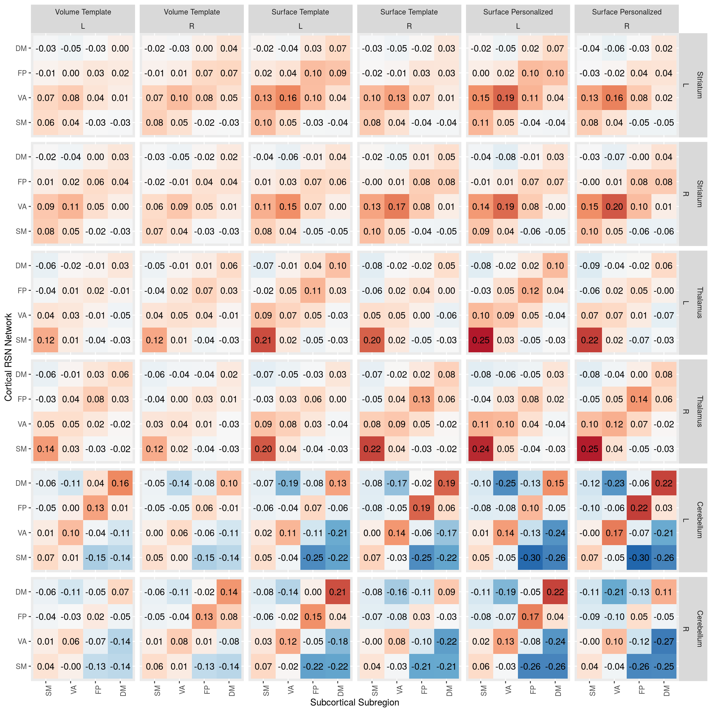

Chapter 8 Is PINT “focusing” cortical subcortical connectivity
table1 <- results_pheno %>%
mutate(corr_diff = pvertex_corr - tvertex_corr) %>%
gather(corr_type, rval, pvertex_corr, tvertex_corr, tvolume_corr) %>%
group_by(corr_type, YeoNet, subcort_ROI, subcort_NET) %>%
summarise(n = n(),
Mean = mean(rval),
SD = sd(rval))
ggplot(table1, aes(y = YeoNet, x = subcort_NET, fill = Mean)) +
geom_tile() +
scale_fill_distiller(breaks = c(-0.5,0.5), type = "div", palette = 5) +
theme(axis.text.x = element_text(angle = 90, hjust = 1)) +
facet_grid(subcort_ROI~corr_type)  functions to help re-annotated the function axes
functions to help re-annotated the function axes
#' sets some the main variables to factors to more descriptive labels
add_corrtype_and_subcortROI_columns <- function(data) {
result <- data %>%
mutate(corrtype = factor(corr_type, levels = c('tvolume_corr','tvertex_corr','pvertex_corr'),
labels = c("Volume Template", "Surface Template", "Surface Personalized")),
subcortROI = factor(subcort_ROI,
levels = c("striatum", "thalamus", "cerebellum"),
labels = c("Striatum", "Thalamus", "Cerebellum")))
return(result)
}
#'drop VI DA and LI network from resutls
drop_VI_DA_LI <- function(data) {
result <- data %>%
filter(subcort_NET != "VI",
subcort_NET != "DA",
subcort_NET != "LI",
YeoNet != "VI",
YeoNet != "DA")
return(result)
}table1 %>%
drop_VI_DA_LI() %>%
add_corrtype_and_subcortROI_columns() %>%
ggplot(aes(y = YeoNet, x = subcort_NET, fill = Mean)) +
geom_tile() +
geom_text(aes(label = sprintf('%3.2f',Mean))) +
scale_fill_distiller(breaks = c(-0.5,0.5), type = "div", palette = 5) +
theme(axis.text.x = element_text(angle = 90, hjust = 1)) +
facet_grid(corrtype~subcortROI) +
labs(y = "Cortical RSN Network", x = "Subcortical Subregion")
table1 <- results_pheno %>%
mutate(corr_diff = pvertex_corr - tvertex_corr) %>%
gather(corr_type, rval, pvertex_corr, tvertex_corr, tvolume_corr) %>%
group_by(corr_type, YeoNet, hemisphere, subcort_ROI, subcort_NET, subcort_hemi) %>%
summarise(n = n(),
Mean = mean(rval),
SD = sd(rval))
table1 %>%
drop_VI_DA_LI() %>%
add_corrtype_and_subcortROI_columns() %>%
ggplot(aes(y = YeoNet, x = subcort_NET, fill = Mean)) +
geom_tile() +
geom_text(aes(label = sprintf('%3.2f',Mean))) +
scale_fill_distiller(breaks = c(-0.5,0.5), type = "div", palette = 5) +
theme(axis.text.x = element_text(angle = 90, hjust = 1)) +
facet_grid(subcortROI*subcort_hemi~corrtype*hemisphere) +
labs(y = "Cortical RSN Network", x = "Subcortical Subregion") 
We see in the above figure that the Yeo 7 Network connectivity strongly shows the expected pattern in the cerebeullum.
Lower evidence is seen in the striatum and thalamus, although there is a faint increase across the diagonal for the SM, VA and DM especially
net_means <- results_pheno %>%
mutate(corr_diff = pvertex_corr - tvertex_corr) %>%
group_by(YeoNet, subcort_ROI, subcort_NET, conn_type, subject) %>%
summarise(netmean_pvertex = mean(pvertex_corr),
netmean_tvertex = mean(tvertex_corr),
netmean_tvolume = mean(tvolume_corr)) %>%
ungroup()
net_means_pint_t <- net_means %>%
group_by(YeoNet, subcort_ROI, subcort_NET) %>%
do(tidy(t.test(.$netmean_pvertex, .$netmean_tvertex, paired = TRUE))) %>%
ungroup() %>% mutate(p_FDR = p.adjust(p.value, method = "fdr"))
net_means_pint_t %>%
ungroup() %>%
mutate(sig = if_else(p_FDR < 0.05, '*', NA_character_) ) %>%
drop_VI_DA_LI() %>%
mutate(subcortROI = factor(subcort_ROI,
levels = c("striatum", "thalamus", "cerebellum"),
labels = c("Striatum", "Thalamus", "Cerebellum"))) %>%
ggplot(aes(x = YeoNet, y = subcort_NET, fill = statistic)) +
geom_tile(color = "black", na.rm = TRUE) +
geom_point(aes(shape = sig), na.rm = TRUE) +
scale_fill_distiller(breaks = c(-10,10), type = "div", palette = 5) +
theme(axis.text.x = element_text(angle = 90, hjust = 1)) +
facet_wrap(~subcortROI) Here we plot the paired t-stat camparing personalized to template, we see a very strong increase in correlation along the diagonal (i.e. with the hypothesized regions) and decreases on the off-dignonal (i.e. decreased connectivity with the other network’s parcels)
Here we plot the paired t-stat camparing personalized to template, we see a very strong increase in correlation along the diagonal (i.e. with the hypothesized regions) and decreases on the off-dignonal (i.e. decreased connectivity with the other network’s parcels)
net_means_vpint_t <- net_means %>%
group_by(YeoNet, subcort_ROI, subcort_NET) %>%
do(tidy(t.test(.$netmean_pvertex, .$netmean_tvolume, paired = TRUE))) %>%
ungroup() %>% mutate(p_FDR = p.adjust(p.value, method = "fdr"))
net_means_vpint_t %>%
ungroup() %>%
mutate(sig = if_else(p_FDR < 0.05, '*', NA_character_) ) %>%
drop_VI_DA_LI() %>%
mutate(subcortROI = factor(subcort_ROI,
levels = c("striatum", "thalamus", "cerebellum"),
labels = c("Striatum", "Thalamus", "Cerebellum"))) %>%
ggplot(aes(x = YeoNet, y = subcort_NET, fill = statistic)) +
geom_tile(color = "black", na.rm = TRUE) +
geom_point(aes(shape = sig), na.rm = TRUE) +
scale_fill_distiller(breaks = c(-10,10), type = "div", palette = 5) +
theme(axis.text.x = element_text(angle = 90, hjust = 1)) +
facet_wrap(~subcortROI)